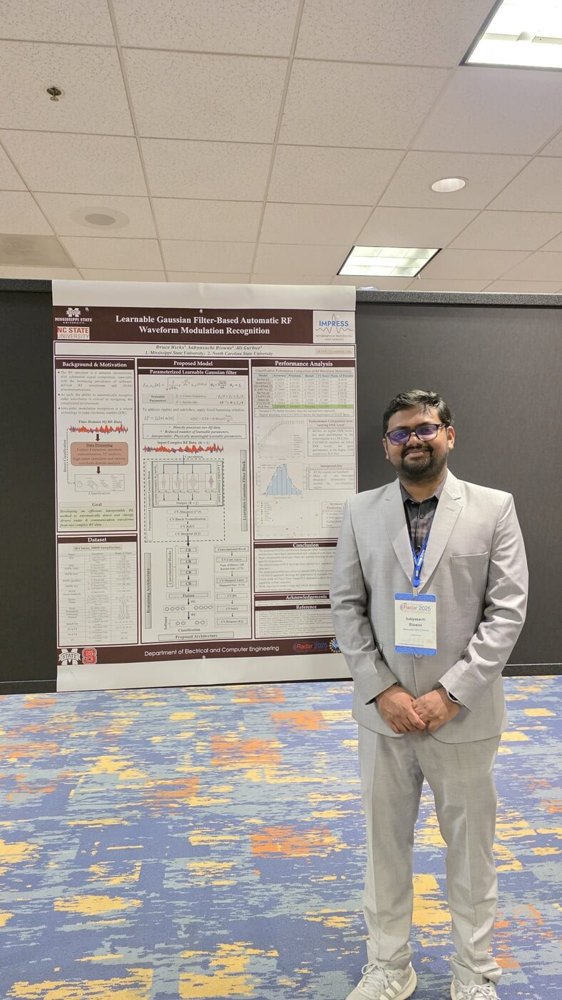
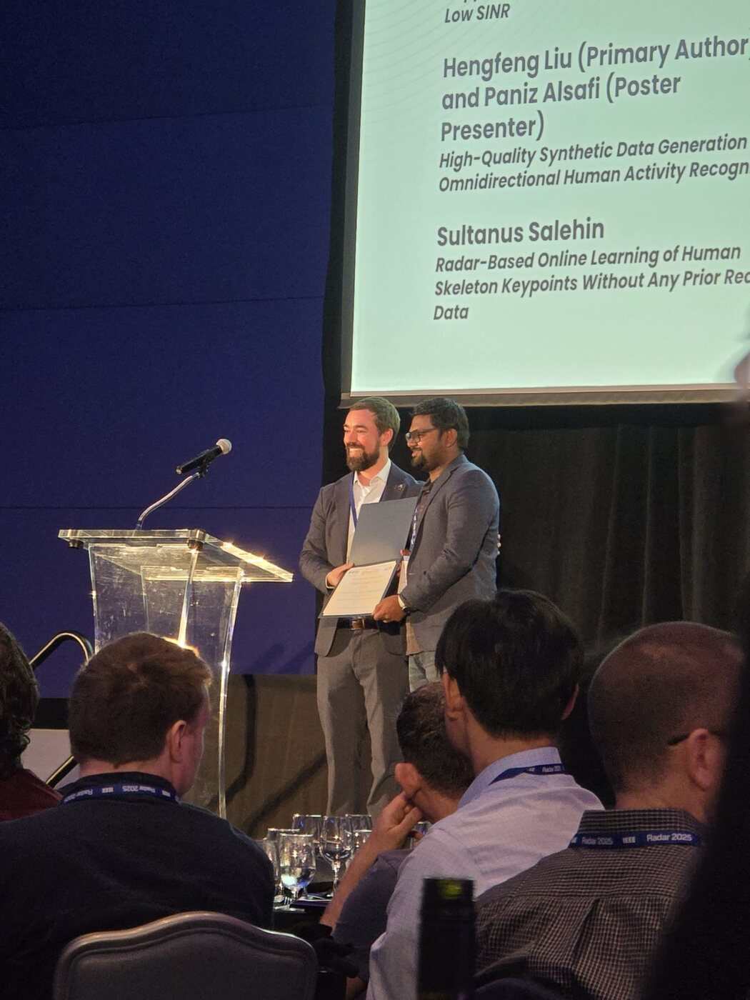
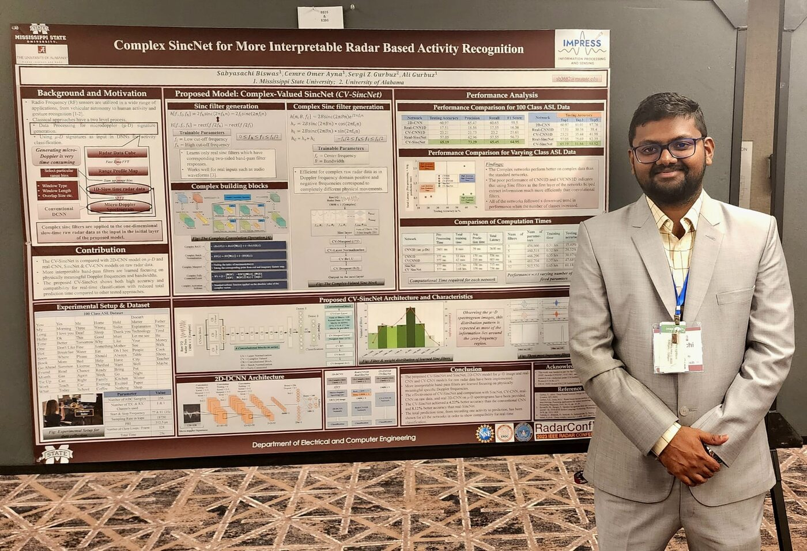
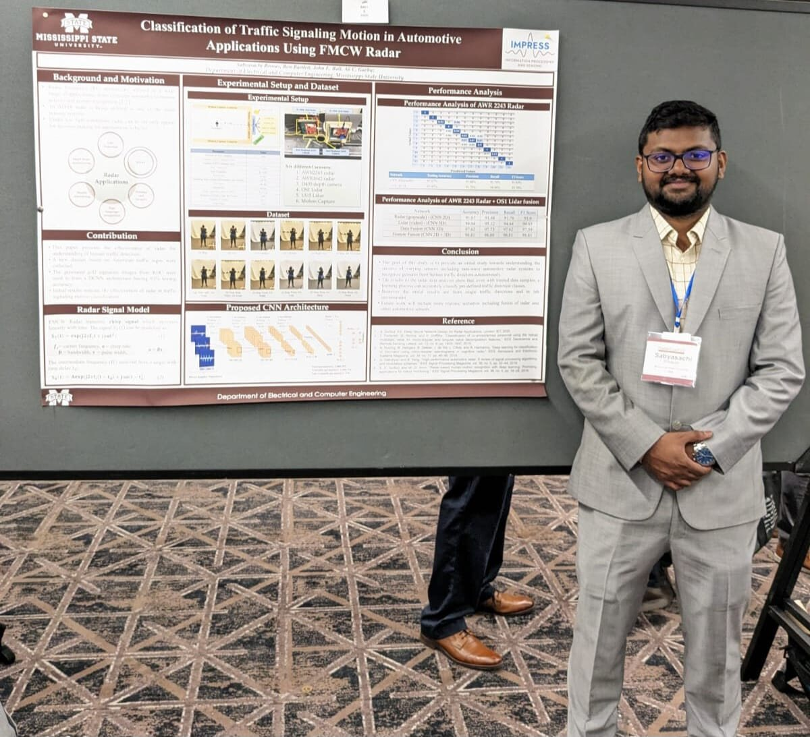
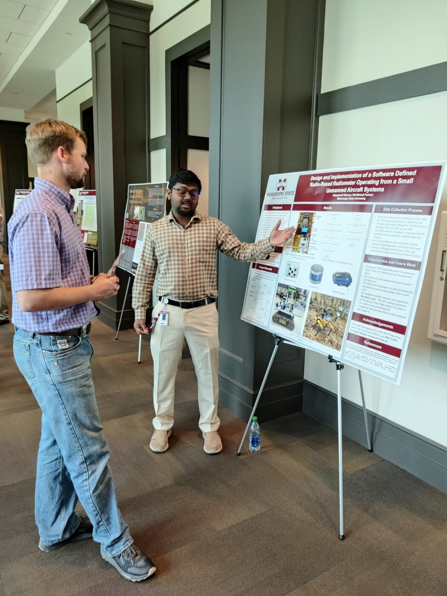
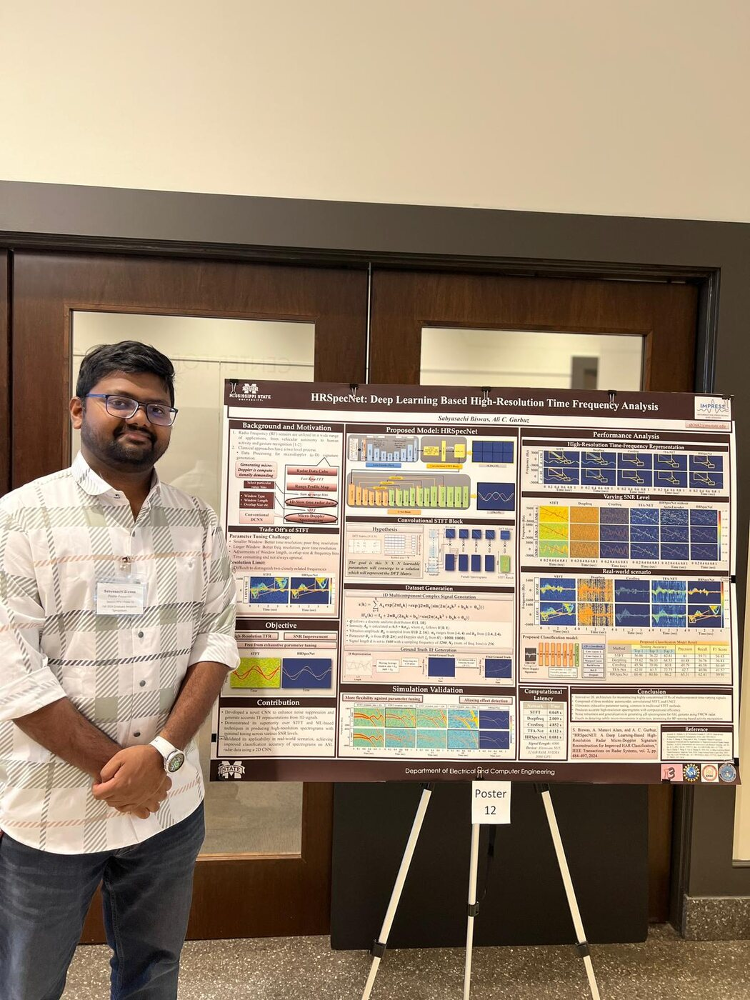
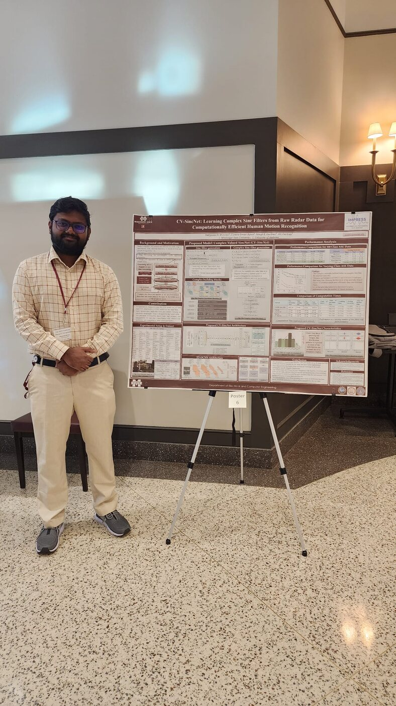

At the poster sessions














Talks, presentations and posters
Seminar
- “HRSpecNET: A Deep Learning-Based High-Resolution Radar Micro-Doppler Signature Reconstruction for Improved HAR Classification”Fall 2024
ECE Graduate Seminar, Mississippi State University Talk
Conference presentations
- “Learnable Gaussian Filter-based Automatic RF Waveform Modulation Recognition”2025
2025 IEEE International Radar Conference (RADAR), Atlanta, GA Poster · Student Paper Competition finalist
- “Deep Learning Based High-Resolution Frequency Estimation for Sparse Radar Range Profiles”2024
2024 IEEE Radar Conference (RadarConf24), Denver, CO
- “Comparison Between Wi-Fi-CSI and Radar-Based HAR”2024
2024 IEEE Radar Conference (RadarConf24), Denver, CO
- “Complex SincNet for More Interpretable Radar Based Activity Recognition”2023
2023 IEEE Radar Conference (RadarConf23), San Antonio, TX Poster
- “Classification of Traffic Signaling Motion in Automotive Applications Using FMCW Radar”2023
2023 IEEE Radar Conference (RadarConf23), San Antonio, TX Poster
- “Design and Implementation of a Software Defined Radio-Based Radiometer Operating from a Small Unmanned Aircraft Systems”2022
2022 IEEE USNC-URSI Radio Science Meeting, Denver, CO Poster
- “Optimization of Electric Vehicle Charging to Shave Peak Load for Integration in Smart Grid”2020
2020 IEEE Region 10 Symposium (TENSYMP)
Research symposia
- “HRSpecNET: Deep Learning-Based High-Resolution Time Frequency Analysis”Fall 2024
Graduate Research Symposium, Mississippi State University Poster
- “CV-SincNet: Learning Complex Sinc Filters from Raw Radar Data for Computationally Efficient Human Motion Recognition”Fall 2023
Graduate Research Symposium, Mississippi State University Poster
- “Boosting Multi-Target Recognition Performance with MIMO Radar-based Angular Subspace Projection and Multi-View DNN”Fall 2022
Graduate Research Symposium, Mississippi State University
- “Angular Subspace Projection for Radar-based Multi-target Classification”Fall 2022
ECE Graduate Research Symposium, Mississippi State University